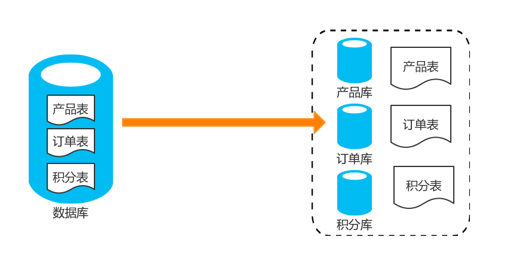
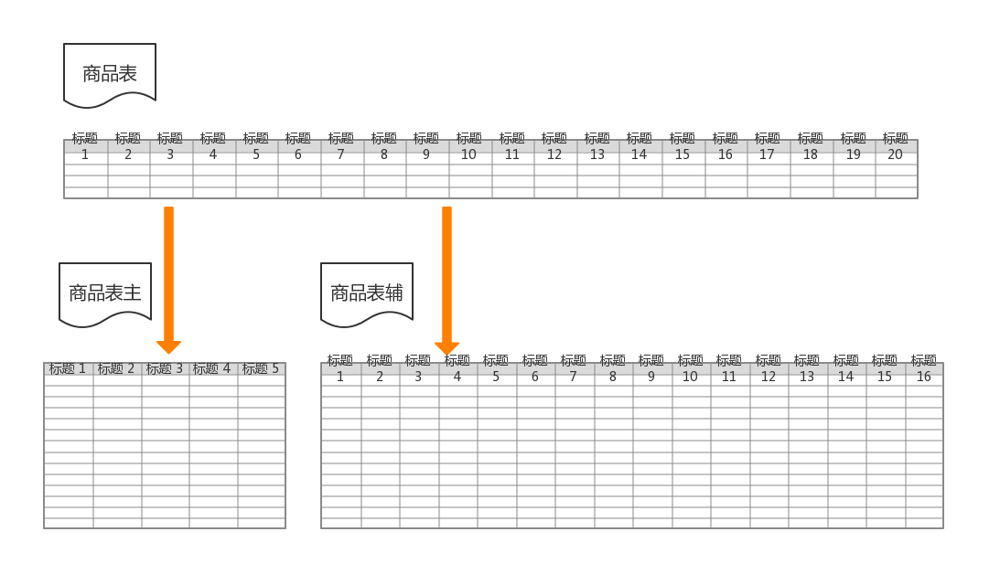
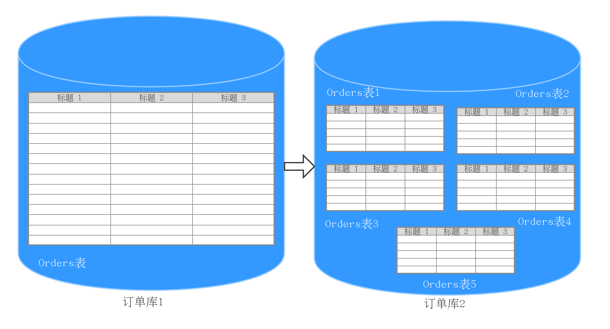
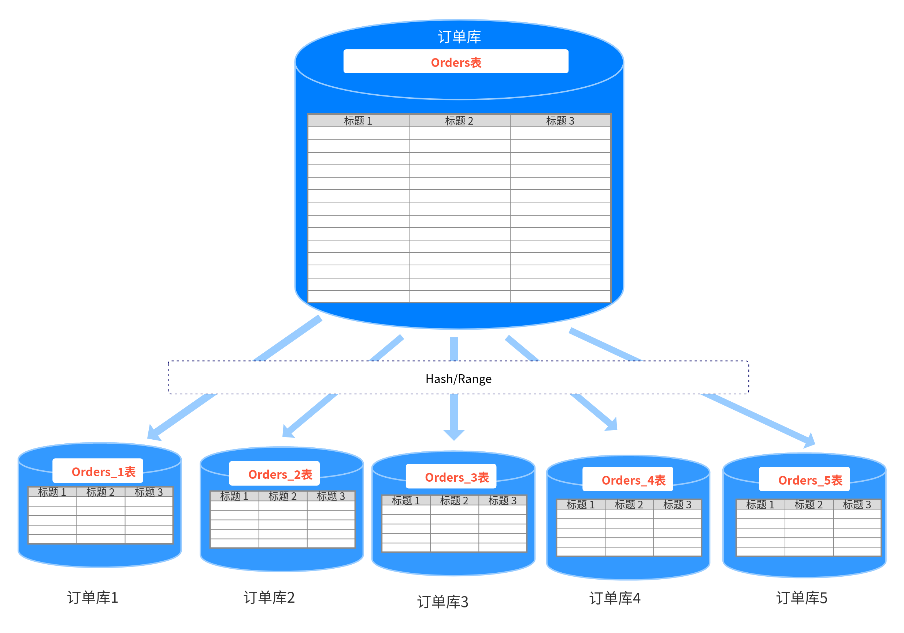

随着近些年信息化大跃进，各行各业无纸化办公产生了大量的数据，而越来越多的数据存入了数据库中。当使用MySQL数据库的时候，单表超出了2000万数据量就会出现性能上的分水岭。并且物理服务器的CPU、内存、存储、连接数等资源有限，某个时段大量连接同时执行操作，会导致数据库在处理上遇到性能瓶颈。为了解决这个问题，行业先驱门充分发扬了分而治之的思想，对大表进行分割，然后实施更好的控制和管理，同时使用多台机器的CPU、内存、存储，提供更好的性能。而分而治之则有两种方式：垂直拆分和水平拆分。
垂直拆分分为垂直分库和垂直分表。先说说垂直分库。垂直分库其实是一种简单逻辑分割。比如我们的数据库中有商品表Products、还有对订单表Orders，还有积分表Scores。接下来我们就可以创建三个数据库，一个数据库存放商品，一个数据库存放订单，一个数据库存放积分。如下图所示：

垂直分库有一个优点，他能够根据业务场景进行孵化，比如某一单一场景只用到某2-3张表，基本上应用和数据库可以拆分出来做成相应的服务。
再来说说垂直分表，比较适用于那种字段比较多的表，假设我们一张表有100个字段，我们分析了一下当前业务执行的SQL语句，有20个字段是经常使用的，而另外80个字段使用比较少。这样我们就可以把20个字段放在主表里面，我们在创建一个辅助表，存放另外80个字段。当然主表和辅助表都是有主键的。他们通过主键进行关联合并，就可以凑成100个字段的表。

垂直分表可以解决跨页的问题。在Oracle中叫行链接。怎么理解呢？就是你字段少的情况下，原本一行数据只需要存在一个页里面就行了，但是字段多的情况就存不下了，就需要跨页。这样就会造成额外寻址，造成性能上的开销。另外将这么长的一行数据载到内存中，往往是几个页面，结果咱们经常只访问其中的几个字段，对内存也是一个极大的开销。所以为了让内存缓存更多数据，减少磁盘I/O，垂直分表就是很好的手段。
总体来说：垂直拆分有以下优点：
垂直拆分的缺点：
当某张表数据量达到一定的程度的时候，前面曾说过MySQL单表出现2000万以上数据就会出现性能上的分水岭。此时发现没有办法根据业务规则再进行拆分了，就会导致单库上的读写性能出现瓶颈。此时就只能进行水平拆分了。
水平拆分又分为库内分表和分库分表。先说说库内分表。假设当我们的Orders表达到了5000万行记录的时候，非常影响数据库的读写效率，怎么办呢？我们可以考虑按照订单编号的order_id进行rang分区,就是把订单编号在1-1000万的放在order1表中，将编号在1000万-2000万的放在order2中，以此类推，每个表中存放1000万数据。如下图所示：

虽然我们可以通过库内分表把单表的容量固定在1000万，但是这些表的数据仍然存放在一个库内，使用的是该主机的CPU、IO、内存。单库的连接数也有限制。并不能完全的降低系统的压力。此时，我们就要考虑另外一种技术叫分库分表。分库分表在库内分表的基础上，将分的表挪动到不同的主机和数据库上。可以充分的使用其他主机的CPU、内存和IO资源。并且分库之后，单库的连接数限制也不在成为瓶颈。但是“成也萧何败也萧何”，如果你执行一个扫描不带分片键，则需要在每个库上查一遍。刚刚我们按照order_id分成了5个库，但是我们查询是name='AAA'的条件并且不带order_id字段时，它并不知道在哪个分片上查，则会创建5个连接，然后每个库都检索一遍。这种广播查询则会造成连接数增多。因为它需要在每个库上都创立连接。如果是高并发的系统，执行这种广播查询，系统的thread很快就会告警。

总体来说：水平拆分的优点有以下：
水平拆分的缺点：
当前我们的系统，垂直拆分和水平拆分都在使用，垂直拆分主要是做业务上的分割，把业务的各个子系统都规划好，能解耦就解耦。而垂直拆分之后。我们再做水平分库分表。通过取模算法将大表数据拆到若干个库中。
介绍了上述的分库分表，我们有必要说一下几个概念，一个是逻辑库和物理库的概念。我们还是拿水平拆分中的分库分表来说。我们在物理层面，将一个库的数据分割到了5个数据库中。这5个数据库就是物理库，而它们对上层应用的展现则是一个库。这个对上层展现的库就叫逻辑库。逻辑库对应用层是透明的。应用不需要了解底层的情况，直接使用就行了。
还是拿水平拆分中的分库分表来说，orders表总共被分成了5份，分别在底层是orders_1~5。这底层的5个表就是物理表。但是对应用层面来说，只有orders表。这就是逻辑表。
总结：这一篇主要是讲述一些分库分表之后的概念。需要加深一些理解，因为我们的项目也才是刚刚开始拆分，所以有写的不对的地方还希望小伙伴们提出意见指正。